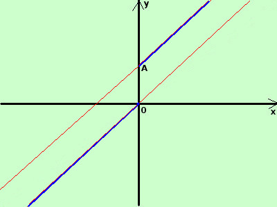

|
sviluppo tracciare il grafico della seguente funzione
La prima parte della funzione e' una parte di retta (bisettrice del primo e terzo quadrante) che devo tracciare nella fascia verticale di piano compresa fra -∞ e la rette verticale x>=0; tale semiretta termina nel punto O(0;0) La seconda parte della funzione e' ancora una parte di retta (bisettrice del primo e terzo quadrante sollevata di 1 unita') che devo tracciare nella fascia verticale di piano compresa fra la rette verticale x>=0 e +∞ ; tale semiretta inizia nel punto A(0;1)  Nea giunzione degli intervalli la funzione salta da un valore di y ad un altro; detto diversamente la funzione non e' "connessa" cioe' non posso spostarmi da un qualunque suo punto a qualunque altro tramite un cammino su punti della funzione stessa Quindi la funzione non e' continua D'altra parte la pendenza della funzione non cambia; l'inclinazione sull'asse orrizontale resta sempre la stessa, pero', anche se l'inclinazione e' la stessa, la funzione non puo' essere considerata derivabile in x=0 perche' non e' continua Si esprime il comcetto che una funzione, per poter essere derivabile, deve essere continua dicendo che "la condizione e' necessaria", cioe' se non succede che e' continua niente derivbilita' Disegno le rette (in rosso) considero le parti di rette disegnate nelle loro striscie di piano in blu il risultato finale |